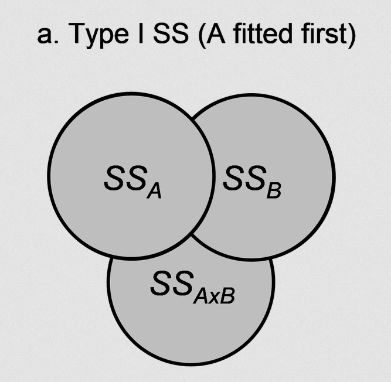
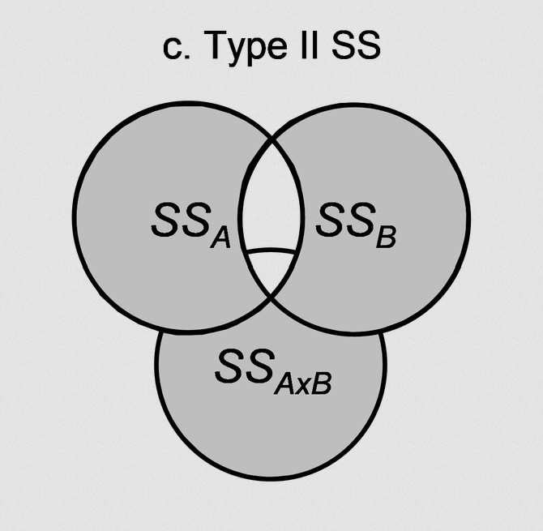
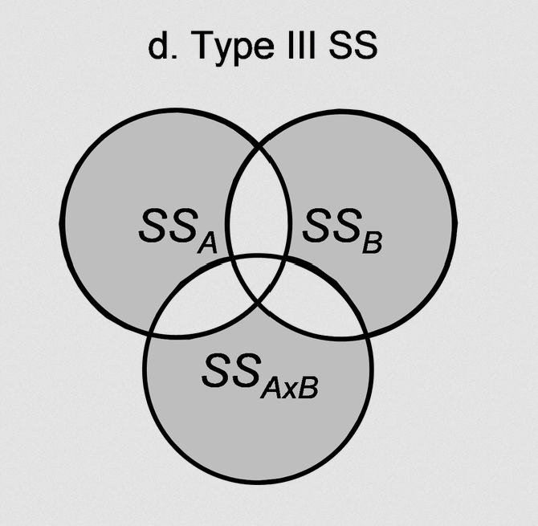

Like One-Way ANOVA, but now we have more than one categorical variable of interest.
○ Year \(\times\) Department on student stress
○ Treatment \(\times\) gender on health outcome
Need to be thinking about both main effects of each factor and their interaction effects.
Factorial ANOVA: more than one factor. We are going to focus on Two-Way ANOVA today, but in theory you can run an as-many-Way-as-you-want ANOVA, with the limitation being interpretation difficulty as the number of factors increases.
○ Trying to interpret a five-way interaction term? 😱
Two-Way ANOVA
If you have two factors (\(A\) and \(B\)), where \(A\) has levels \(j = 1, \ ..., \ J\) and \(B\) has levels \(k = 1, \ ..., \ K\),
○ \((\alpha \beta)_{jk}\): effect of unique interaction between \(A_j\) and \(B_k\), beyond what just \(\alpha_j + \beta_k\) would expect
Want to examine variance in \(y_{ijk}\) that is accounted for by each of these terms.
Two-Way ANOVA Example
So far we’ve looked at penguin species, but these penguin measurements were taken over multiple years.
What if the year a penguin’s measurement was taken is in some way linked to the penguin’s flipper length?
○ We are assuming these are different penguins each year: the researchers took measurements on three independent groups of penguins in each year. If the researchers had instead followed the penguins over time, we would need to consider the within-penguin variance as well (more on this next week!).
Two-Way ANOVA in R
Can use an asterisk * between terms to denote interactions in formula syntax.
Swapping to a + would just estimate the main effects (no interactions).
library(palmerpenguins)penguins_cleaned<-penguins|>filter_out(when_any(is.na(year), is.na(flipper_length_mm), is.na(species)))|>mutate(year =factor(year))flipper_model_twoway<-aov(flipper_length_mm~species*year, data =penguins_cleaned)summary(flipper_model_twoway)
Df Sum Sq Mean Sq F value Pr(>F)
species 2 52473 26237 651.974 < 2e-16 ***
year 2 1464 732 18.190 3.18e-08 ***
species:year 4 89 22 0.551 0.698
Residuals 333 13401 40
---
Signif. codes: 0 '***' 0.001 '**' 0.01 '*' 0.05 '.' 0.1 ' ' 1
Anova Table (Type III tests)
Response: flipper_length_mm
Sum Sq Df F value Pr(>F)
(Intercept) 1706009 1 42393.8971 < 2.2e-16 ***
species 17012 2 211.3687 < 2.2e-16 ***
year 847 2 10.5267 3.69e-05 ***
species:year 89 4 0.5513 0.6982
Residuals 13401 333
---
Signif. codes: 0 '***' 0.001 '**' 0.01 '*' 0.05 '.' 0.1 ' ' 1
Wrong
^ This is wrong! While this looks semi-reasonable, this is not the actual Type III Sums of Squares for this model.
options( contrasts =c(unordered ="contr.sum", ordered ="contr.poly"))flipper_model_twoway_again<-aov(flipper_length_mm~species*year, data =penguins_cleaned)flipper_model_type_iii<-car::Anova(flipper_model_twoway_again, type =3)flipper_model_type_iii
Anova Table (Type III tests)
Response: flipper_length_mm
Sum Sq Df F value Pr(>F)
(Intercept) 12132981 1 3.0150e+05 < 2.2e-16 ***
species 51276 2 6.3710e+02 < 2.2e-16 ***
year 1374 2 1.7076e+01 8.713e-08 ***
species:year 89 4 5.5130e-01 0.6982
Residuals 13401 333
---
Signif. codes: 0 '***' 0.001 '**' 0.01 '*' 0.05 '.' 0.1 ' ' 1
Types of Sums of Squares
Type I
flipper_model_type_i
Df Sum Sq Mean Sq F value Pr(>F)
species 2 52473 26237 651.974 < 2e-16 ***
year 2 1464 732 18.190 3.18e-08 ***
species:year 4 89 22 0.551 0.698
Residuals 333 13401 40
---
Signif. codes: 0 '***' 0.001 '**' 0.01 '*' 0.05 '.' 0.1 ' ' 1
Type II
flipper_model_type_ii
Anova Table (Type II tests)
Response: flipper_length_mm
Sum Sq Df F value Pr(>F)
species 51333 2 637.8071 < 2.2e-16 ***
year 1464 2 18.1898 3.182e-08 ***
species:year 89 4 0.5513 0.6982
Residuals 13401 333
---
Signif. codes: 0 '***' 0.001 '**' 0.01 '*' 0.05 '.' 0.1 ' ' 1
Type III
flipper_model_type_iii
Anova Table (Type III tests)
Response: flipper_length_mm
Sum Sq Df F value Pr(>F)
(Intercept) 12132981 1 3.0150e+05 < 2.2e-16 ***
species 51276 2 6.3710e+02 < 2.2e-16 ***
year 1374 2 1.7076e+01 8.713e-08 ***
species:year 89 4 5.5130e-01 0.6982
Residuals 13401 333
---
Signif. codes: 0 '***' 0.001 '**' 0.01 '*' 0.05 '.' 0.1 ' ' 1



Proceeding With Type III
flipper_model_twoway<-flipper_model_twoway_again
Note that effect coding will be used for the rest of the models we estimate!
Types of Sums of Squares
The ezANOVA() function from the ez package has different syntax, but will handle remembering unbalanced sample sizes (and remembering the effect coding) for us.
# install.packages("ez")
We will need an ID column for the penguins:
penguins_cleaned<-penguins|>filter_out(when_any(is.na(year), is.na(flipper_length_mm), is.na(species)))|>mutate(year =factor(year), id =row_number())
penguins_cleaned|>ggplot(aes(x =year, fill =species, y =flipper_length_mm, color =species))+geom_violin(alpha =0.3, color =NA)+geom_jitter(position =position_jitterdodge(dodge.width =0.9), alpha =.6, shape =16, size =2)+labs(x ="Year", y ="Flipper Length (mm)", color ="Species")+guides(fill =guide_none())+theme_minimal(base_size =14)+theme(legend.position ="bottom", panel.grid.minor =element_blank(), panel.grid.major.x =element_blank())
Effect Sizes: Partial \(\eta^2\)
With two factors, have to consider whether you want to investigate the proportion of variance accounted for by a factor by ignoring other factors or as a proportion of the total variance.
effectsize::eta_squared(flipper_model_twoway, partial =T)# partial = T is default
# Effect Size for ANOVA (Type I)
Parameter | Eta2 (partial) | 95% CI
--------------------------------------------
species | 0.80 | [0.77, 1.00]
year | 0.10 | [0.05, 1.00]
species:year | 6.58e-03 | [0.00, 1.00]
- One-sided CIs: upper bound fixed at [1.00].
Effect Sizes: “Full” \(\eta^2\)
With two factors, have to consider whether you want to investigate the proportion of variance accounted for by a factor by ignoring other factors or as a proportion of the total variance.
effectsize::eta_squared(flipper_model_twoway, partial =F)# partial = T is default
# Effect Size for ANOVA (Type I)
Parameter | Eta2 | 95% CI
--------------------------------------
species | 0.78 | [0.75, 1.00]
year | 0.02 | [0.00, 1.00]
species:year | 1.32e-03 | [0.00, 1.00]
- One-sided CIs: upper bound fixed at [1.00].
Effect Sizes: Partial \(\omega^2\)
With two factors, have to consider whether you want to investigate the proportion of variance accounted for by a factor by ignoring other factors or as a proportion of the total variance.
effectsize::omega_squared(flipper_model_twoway, partial =T)# partial = T is default
# Effect Size for ANOVA (Type I)
Parameter | Omega2 (partial) | 95% CI
----------------------------------------------
species | 0.79 | [0.76, 1.00]
year | 0.09 | [0.05, 1.00]
species:year | 0.00 | [0.00, 1.00]
- One-sided CIs: upper bound fixed at [1.00].
Effect Sizes: “Full” \(\omega^2\)
With two factors, have to consider whether you want to investigate the proportion of variance accounted for by a factor by ignoring other factors or as a proportion of the total variance.
library(rstanarm)flipper_model_twoway_bayes<-stan_glm(flipper_length_mm~species*year, data =penguins_cleaned, family ="gaussian")summary(flipper_model_twoway_bayes)
Model Info:
function: stan_glm
family: gaussian [identity]
formula: flipper_length_mm ~ species * year
algorithm: sampling
sample: 4000 (posterior sample size)
priors: see help('prior_summary')
observations: 342
predictors: 9
Estimates:
mean sd 10% 50% 90%
(Intercept) 201.0 0.4 200.5 201.0 201.5
species1 -11.1 0.5 -11.7 -11.1 -10.5
species2 -4.9 0.6 -5.7 -4.9 -4.2
year1 -3.0 0.5 -3.6 -3.0 -2.3
year2 1.1 0.5 0.4 1.1 1.8
species1:year1 -0.4 0.7 -1.2 -0.4 0.5
species2:year1 -0.7 0.8 -1.7 -0.7 0.3
species1:year2 0.0 0.7 -0.8 0.1 0.9
species2:year2 0.5 0.9 -0.6 0.5 1.7
sigma 6.4 0.2 6.1 6.4 6.7
Fit Diagnostics:
mean sd 10% 50% 90%
mean_PPD 200.9 0.5 200.3 200.9 201.5
The mean_ppd is the sample average posterior predictive distribution of the outcome variable (for details see help('summary.stanreg')).
MCMC diagnostics
mcse Rhat n_eff
(Intercept) 0.0 1.0 4274
species1 0.0 1.0 3707
species2 0.0 1.0 3424
year1 0.0 1.0 3919
year2 0.0 1.0 3022
species1:year1 0.0 1.0 3105
species2:year1 0.0 1.0 3091
species1:year2 0.0 1.0 2724
species2:year2 0.0 1.0 2618
sigma 0.0 1.0 4974
mean_PPD 0.0 1.0 4644
log-posterior 0.1 1.0 1567
For each parameter, mcse is Monte Carlo standard error, n_eff is a crude measure of effective sample size, and Rhat is the potential scale reduction factor on split chains (at convergence Rhat=1).
Simple Main Effects
Simple Main Effects
How do we examine effects within these multiple factors?
We can investigate the differences in outcome between levels of \(A\) within a single level of \(B\) at a time.
○ Within the year of 2007, what were the differences between Adelie, Gentoo, and Chinstrap penguins?
○ What about within the year of 2008?
Can also flip (depending on how you’d like to interpret the results)
○ For Adelie penguins only, what was the effect of year on flipper length?
○ What about for Gentoo penguins?
Can examine this by running a separate One-Way ANOVA within each level.
smes_by_species<-joint_tests(emms_flipper_twoway, by ="species")smes_by_species
species = Adelie:
model term df1 df2 F.ratio p.value
year 2 333 10.527 <0.0001
species = Chinstrap:
model term df1 df2 F.ratio p.value
year 2 333 6.064 0.0026
species = Gentoo:
model term df1 df2 F.ratio p.value
year 2 333 2.701 0.0686
smes_by_year<-joint_tests(emms_flipper_twoway, by ="year")smes_by_year
year = 2007:
model term df1 df2 F.ratio p.value
species 2 333 211.369 <0.0001
year = 2008:
model term df1 df2 F.ratio p.value
species 2 333 216.286 <0.0001
year = 2009:
model term df1 df2 F.ratio p.value
species 2 333 211.255 <0.0001
Simple Main Effects emmeans
Can then look at pairwise comparisons within each of those One-Way ANOVAs.
pairs_within_species<-pairs(emms_flipper_twoway, by ="species")# default: adjust = "tukey"pairs_within_species
species = Adelie:
contrast estimate SE df t.ratio p.value
year2007 - year2008 -4.448 1.28 333 -3.488 0.0016
year2007 - year2009 -5.485 1.26 333 -4.343 <0.0001
year2008 - year2009 -1.037 1.26 333 -0.825 0.6876
species = Chinstrap:
contrast estimate SE df t.ratio p.value
year2007 - year2008 -5.299 1.95 333 -2.724 0.0186
year2007 - year2009 -5.660 1.80 333 -3.152 0.0050
year2008 - year2009 -0.361 1.98 333 -0.183 0.9818
species = Gentoo:
contrast estimate SE df t.ratio p.value
year2007 - year2008 -2.448 1.43 333 -1.706 0.2044
year2007 - year2009 -3.301 1.46 333 -2.267 0.0619
year2008 - year2009 -0.853 1.35 333 -0.634 0.8014
P value adjustment: tukey method for comparing a family of 3 estimates
emms_flipper_twoway_df|>ggplot(aes(x =year, y =emmean, color =species, ymin =lower.CL, ymax =upper.CL))+geom_point(position =position_dodge(0.3))+geom_pointrange(position =position_dodge(0.3))+scale_y_continuous("EMM of Flipper Length", limits =c(180, 230))+scale_color_discrete(palette ="Set2")+labs(caption ="Line ranges represent 95% confidence intervals of the mean"|>str_wrap(50))+guides(x =guide_axis(NULL, cap =T), y =guide_axis(cap =T))+theme_classic()+theme(legend.position ="none")
Plotting Two-Way emmeans
Adding a geom_line() makes sense because the axis has (1) natural ordering and (2) equal-spaced intervals (2007, 2008, 2009).
emms_flipper_twoway_df|>ggplot(aes(x =year, y =emmean, color =species, group =species, ymin =lower.CL, ymax =upper.CL))+geom_line(position =position_dodge(0.3))+geom_point(position =position_dodge(0.3))+geom_pointrange(position =position_dodge(0.3))+scale_y_continuous("EMM of Flipper Length", limits =c(180, 230))+scale_color_discrete(palette ="Set2")+labs(caption ="Line ranges represent 95% confidence intervals of the mean"|>str_wrap(50))+guides(x =guide_axis(NULL, cap =T), y =guide_axis(cap =T))+theme_classic()+theme(legend.position ="none")
Little trickier to get effect sizes for each of these comparisons. For an effect size, we want to divide the mean differences by the residual standard deviation.
\[d = \frac{\text{contrast estimate}}{\sigma}\]
With Bayes, we typically want to incorporate the full posterior uncertainty in our effect size, both the uncertainty in the contrast estimate and the uncertainty in the residual standard deviation.
# A tibble: 9 × 4
contrast_name mean lower_025 upper_975
<chr> <dbl> <dbl> <dbl>
1 contrast year2007 - year2008 species Adelie -0.705 -1.09 -0.310
2 contrast year2007 - year2009 species Adelie -0.864 -1.25 -0.472
3 contrast year2008 - year2009 species Adelie -0.159 -0.549 0.227
4 contrast year2007 - year2008 species Chinstrap -0.828 -1.45 -0.214
5 contrast year2007 - year2009 species Chinstrap -0.886 -1.45 -0.334
6 contrast year2008 - year2009 species Chinstrap -0.0581 -0.666 0.563
7 contrast year2007 - year2008 species Gentoo -0.388 -0.812 0.0435
8 contrast year2007 - year2009 species Gentoo -0.522 -0.965 -0.0796
9 contrast year2008 - year2009 species Gentoo -0.134 -0.544 0.276
ANOVA and Power
One-Way ANOVA and Power
Just like with t-tests, you may want to examine power for an ANOVA.
pwr.anova.test(k, n, f, sig.level = 0.05, power)
○ k = number of groups
○ n = number of observations per group
○ f = effect size as in \(f = \sqrt{f^2}\)
○ sig.level = significance level, typically 0.05
○ power = power of test
Like before, specify all but one, and the function will calculate the last
Remember \(f^2\) is the ratio of between-group variability to within-group variability
Getting \(f\)
The prw::pwr.anova.test function wants \(f = \sqrt{f^2}\).
If you’re thinking about an effect size in \(\eta^2\) or \(\omega^2\) you can convert it.
\[f = \sqrt{\frac{\eta_2}{1 - \eta^2}}\]
\[f = \sqrt{\frac{\omega^2}{1 - \omega^2}}\]
The effectsize::eta2_to_f(effect_size) can convert “any measure of variance explained such as Eta-, Epsilon-, Omega-, or R-Squared, partial or otherwise”
power_values_df<-tibble( sample_sizes =seq(10, 250, by =20))|>mutate( power =map_dbl(sample_sizes, function(sample_size)pwr::pwr.anova.test( n =sample_size, k =3, f =0.1, sig.level =0.05)$power))
power_values_df<-tibble( sample_sizes =seq(10, 250, by =20))|>expand_grid(f =c(0.1, 0.25, 0.6))|>mutate( power =map2_dbl(sample_sizes, f,function(sample_size, f)pwr::pwr.anova.test( n =sample_size, k =3, f =f, sig.level =0.05)$power))
power_values_df|>ggplot(aes(x =sample_sizes, y =power, color =factor(f)))+geom_line()+geom_hline(aes(yintercept =0.8), linetype ="dashed", color ="gray75")+geom_line()+coord_cartesian(ylim =c(0, 1))+theme_classic(base_size =14)
One-Way ANOVA and Power
Let’s examine how many participants we would need for a small, medium, or large effect (we can do \(f =\)\(0.1\), \(0.25\), and \(0.6\)).
power_values_df<-tibble( sample_sizes =seq(10, 500, by =10))|>expand_grid(f =c(0.1, 0.25, 0.6))|>mutate( power =map2_dbl(sample_sizes, f,function(sample_size, f)pwr::pwr.anova.test( n =sample_size, k =3, f =f, sig.level =0.05)$power))
power_values_df|>ggplot(aes(x =sample_sizes, y =power, color =factor(f)))+geom_line()+geom_hline(aes(yintercept =0.8), linetype ="dashed", color ="gray75")+geom_line()+coord_cartesian(ylim =c(0, 1))+theme_classic(base_size =14)
One-Way ANOVA and Power
Let’s examine how many participants we would need for a small, medium, or large effect (we can do \(f =\)\(0.1\), \(0.25\), and \(0.6\)).
power_values_df<-tibble( sample_sizes =seq(10, 500, by =10))|>expand_grid(f =c(0.1, 0.25, 0.6))|>mutate( power =map2_dbl(sample_sizes, f,function(sample_size, f)pwr::pwr.anova.test( n =sample_size, k =3, f =f, sig.level =0.05)$power), total_sample_size =sample_sizes*3)
power_values_df|>ggplot(aes(x =total_sample_size, y =power, color =factor(f)))+geom_line()+geom_hline(aes(yintercept =0.8), linetype ="dashed", color ="gray75")+geom_line()+coord_cartesian(ylim =c(0, 1))+theme_classic(base_size =14)
Two-Way ANOVA and Power
There is no specific pwr function for a two-way ANOVA, but it has a broader function for the general linear model. It more flexible because it is based on degrees of freedom.
Need to consider degrees of freedom for your intended test.
Two-Way ANOVA and Power
Maybe you want to conduct a 3x3 ANOVA, and you’d like to know how many people to recruit. With this function, we can examine the power for each effect at a time. For example, let’s do the interaction effect.
Maybe you want to conduct a 3x3 ANOVA, and you’d like to know how many people to recruit. With this function, we can examine the power for each effect at a time. For example, let’s do the interaction effect.
power_values_df|>ggplot(aes(x =sample_size, y =power, color =factor(sqrt(f2))))+geom_line()+geom_hline(aes(yintercept =0.8), linetype ="dashed", color ="gray75")+geom_line()+coord_cartesian(ylim =c(0, 1))+labs(color ="f")+theme_classic(base_size =14)